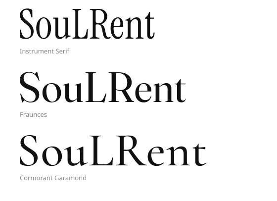

SouLRent — set logo
Revisione 1 · settembre 2026 · tutti i tracciati vettoriali, testo in outline
Lockup orizzontale — uso primario
Header del sito, firma email, documenti, intestazioni.
Lockup verticale
Biglietti da visita, footer, cartellonistica, packaging.
Monogramma
Avatar social, app icon, portachiavi, ricamo, adesivo scafo. Il quadrato pieno è la versione da usare dove serve presenza (avatar, icona).
Wordmark
Da solo quando il monogramma è già presente altrove nella stessa vista.
Prova a dimensione reale
16 px
32 px · favicon
60 px
120 px · avatar
24 px alt. · header
A 16 px il monogramma resta leggibile ma perde l'occhiello. Sotto i 20 px usare il quadrato pieno, mai il monogramma nudo.
Area di rispetto
Margine libero minimo su ogni lato = larghezza dell'asta del monogramma. Nessun elemento, testo o bordo dentro quest'area.
Confronto wordmark — se vuoi cambiare font

Il set consegnato usa Instrument Serif. Fraunces è più caldo e ha più carattere; Cormorant Garamond è più classico e più leggero. Tutti e tre sono OFL, quindi utilizzabili in un marchio registrato.
Palette
| Token | Hex | Uso |
|---|---|---|
| ink | #0F1113 | Base. Nero caldo, mai #000000 |
| bone | #F4F1EC | Superfici chiare, testo su scuro. Mai bianco puro |
| sea | #1B3A4B | Secondario, sezione mare |
| brass | #B08D57 | Accento. Max 5% della superficie |
| stone | #8A8781 | Testo secondario |
Usi vietati
| ✕ | Ruotare, inclinare o deformare il marchio |
| ✕ | Riempirlo con un gradiente, applicare ombre o bagliori |
| ✕ | Colorarlo in ottone. L'ottone è un accento di interfaccia, mai il marchio |
| ✕ | Cambiare le proporzioni tra monogramma e wordmark nel lockup |
| ✕ | Ricomporre il wordmark con un font diverso da quello consegnato |
| ✕ | Aggiungere onde, ancore, timoni o profili di isola |
| ✕ | Posare il monogramma nudo su una foto senza sufficiente contrasto |